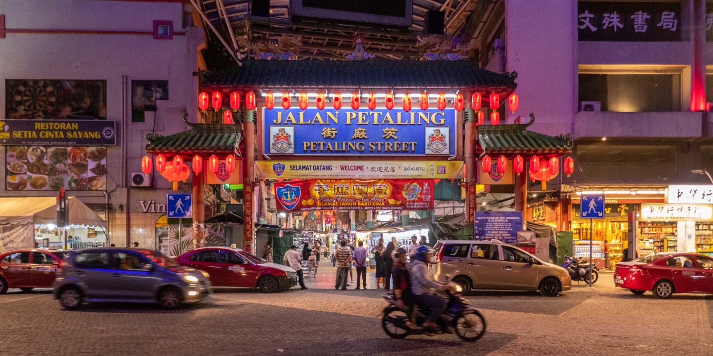
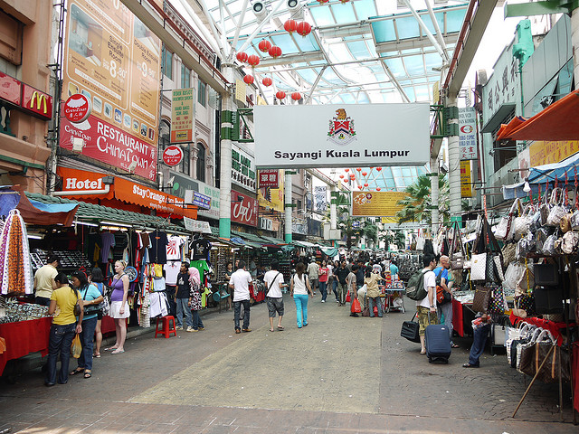

Petaling Street
Petaling Street, the centre of
Kuala Lumpur’s original Chinatown,
maintains much of its traditional
atmosphere, particularly at night
when vendors fan out their merchandise
along the street.
Petaling Street, the centre of
Kuala Lumpur’s original Chinatown,
maintains much of its traditional
atmosphere, particularly at night
when vendors fan out their merchandise
along the street.

Jalan Panggong
Located Near Petaling Street,
a new Chinatown attraction near
Petaling Street which consist of
restoration project that involved
ten shop houses. There are a
lot of corners to take photos.
Located Near Petaling Street,
a new Chinatown attraction near
Petaling Street which consist of
restoration project that involved
ten shop houses. There are a
lot of corners to take photos.

❮
❯
Inside of Petaling Street
Beautiful undercover market area
close to Central Market which has
a variety of stores and restaurant.
Most stores sell designer branded
merchandise.
Beautiful undercover market area
close to Central Market which has
a variety of stores and restaurant.
Most stores sell designer branded
merchandise.